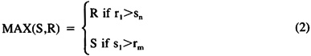
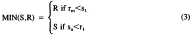
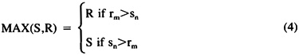
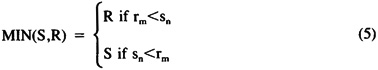
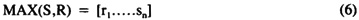
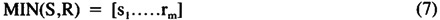
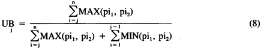
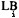
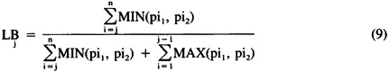

by Abraham Kandel
CRC Press, CRC Press LLC
ISBN: 084934297x Pub Date: 11/01/91
|
|
Fuzzy Expert Systems
by Abraham Kandel CRC Press, CRC Press LLC ISBN: 084934297x Pub Date: 11/01/91 |
| Previous | Table of Contents | Next |
Assume the following information has been provided by the user:
What is the typical age of the group of people described above?
Clearly the FEV is not applicable here, since the calculation of FEV requires complete information about the distribution of the population and their grade of membership (the χ’s). The FEI was developed to solve these kinds of problems.
The solution to the problem in Example 2 will be provided in the following section. Here we describe some properties of the FEI.
In principle, the evaluation of FEI is performed using Equation 1. According to Equation 1, in order to find FEV it is necessary to find all MINs for each row and then the MAX over all MINs. The evaluation of FEI is performed in the same way. The following theorems will provide a method for evaluating MINs and MAXs among intervals.5
Theorem 1. Let S and R be two intervals such that (a) S = {s1 . . . sn} (b) R = {r1 . . . rm}, and (c) . Then the MAX of the two intervals is

Theorem 2. Let S and R be two intervals such that (a) S = {s1 . . . sn} (b) R = {r1 . . . rm} and (c) . Then the MIN of the two intervals is

Theorem 3. Let S and R be two intervals such that (a) S = {s1 . . . sn} (b) R = {r1 . . . rm} (c) (d) and . Then the MAX of the two intervals is

Theorem 4. Let S and R be two intervals such that (a) S = {s1 . . . sn} (b) R = {r1 . . . rm} (c) (d) and . Then the MIN of the two intervals is

Theorem 5. Let S and R be two intervals such that S = {s1 . . . sn} and R = {r1 . . . rm}, and . Then the MAX of the two intervals is

Theorem 6. Let S and R be two intervals such that S = {s1 . . . sn} and R = {r1 . . . rm}, and . Then the MIN of the two intervals is

Definition 1. Let α and β be intervals. Then we say that α is higher than β if the upper bound of α is greater than the upper bound of β.
The following 2 equations are developed to handle fuzzy distribution of population.6

where pi1 is the lower bound of group i and pi2 is the upper bound of group i.
The process of finding the lower bound of any μi (or ) is given by the following equation:

This concludes the description of the fuzzy expected interval. Next we describe the front-end compiler and show how it uses the fuzzy expected intervals in the process of compiling fuzzy data.
The Front-end Compiler (FC) is a program which receives data from the user (usually) and converts it to a form which can be understood by the inference engine. The inference engine places the transformed data on a blackboard to use in the evaluation of the knowledge base.
The task of compiling the data involves grouping the data according to some criteria, ordering each group by its characteristics, and, then, finding the fuzzy expected value or the fuzzy expected interval for some of the groups.
The blackboard is a global data structure (i.e., the contents of the blackboard is reachable from any part of the software) that contains important information about the data. Each line on the blackboard contains:
| Name | Notation |
|---|---|
| key word 1 | K1 |
| key word 2 | K2 |
| key word 3 | K3 |
| lower bound 1 | LB1 |
| upper bound 1 | UB1 |
| lower bound 2 | LB2 |
| upper bound 2 | LB2 |
| certainty factor | CF |
| rule number | RN |
The CF of any data provided by the user is always 1; the reason being that it is logical to trust the user to provide the right data. Even if the data is vague (for example, “almost 30 people are between the ages of 20 and 30”), the user is certain that this data is the only data available. Therefore, the expert system should treat the data as an absolute truth even if the evaluation will show otherwise.
In order to see how the compiled data is stored on the blackboard it is necessary to define the legal structure of a sentence. There are two types of sentences recognized by the FC:
The general structure of a sentence of Type 1 is
THE A of [the] B is [not] [adjective] C
where A and B are key words and C is either a key word, a number, or a range of numbers describing B. The words in the brackets are optional.
As mentioned before, each line on the blackboard has important information:
The evaluation of a sentence depends on the value of the adjective, C, and whether or not a negation is used in the sentence (not C). We explain each case separately.
| Previous | Table of Contents | Next |